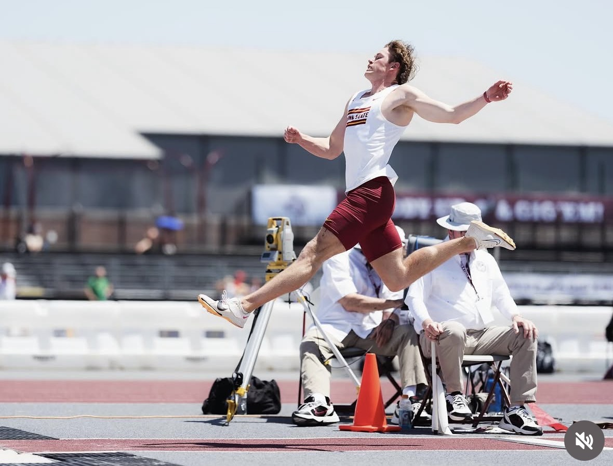
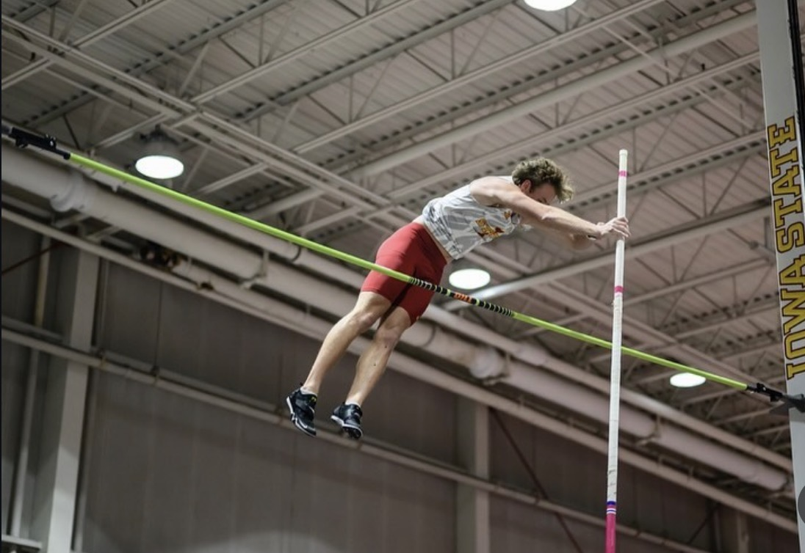

About Coach
I am a former Iowa State decathlete who competed in all 10 events of the decathlon. I was named an All-American and All-Conference athlete, while also earning Academic Honor Roll recognition for four semesters.
My high school background was primarily as a sprinter, so when I got to college, I had to learn the other events of the decathlon from the ground up. That experience taught me how important strong fundamentals, proper technique, and quality instruction are when learning something new.
Throughout my college career, I had the opportunity to learn both basic and advanced drills across all 10 events. I want to use that experience to help athletes build their skills, understand their events, and become more confident competitors.

Long Jump

Pole Vault
My goal with this camp is to pass along what I have learned and help athletes prepare for their upcoming middle school and high school seasons.